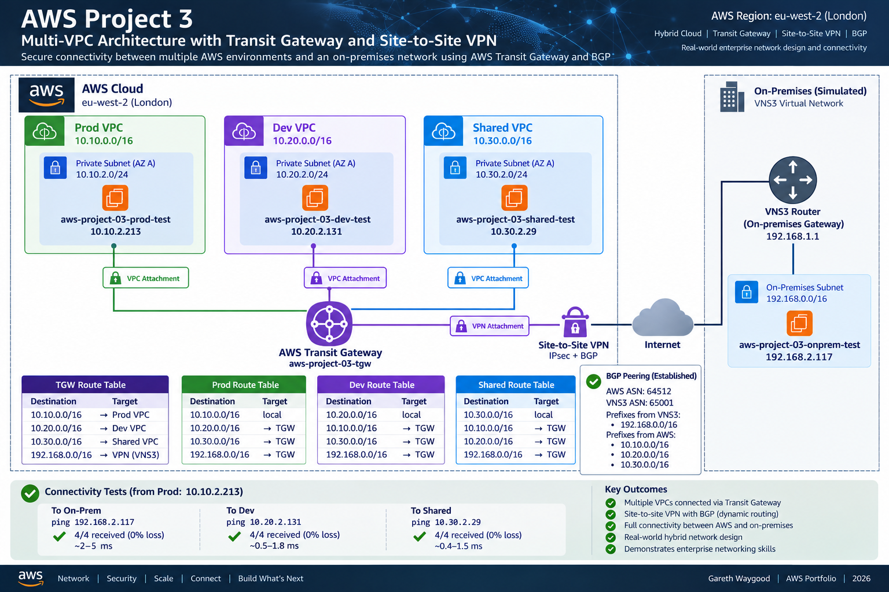

A hybrid multi-VPC AWS architecture using Transit Gateway, Site-to-Site VPN and BGP dynamic routing to connect Production, Development and Shared Services VPCs to a simulated on-premises network.
The objective of this project was to design and build an enterprise-style hybrid network in AWS, combining multiple VPCs with a simulated on-premises environment.
The solution uses AWS Transit Gateway as the central routing hub and an AWS Site-to-Site VPN using IPsec and BGP to exchange routes dynamically with a VNS3 virtual router representing the on-premises network.
The environment was built manually through the AWS Management Console so that each stage of VPC routing, Transit Gateway propagation, VPN configuration, BGP peering and hybrid connectivity could be configured, observed and troubleshot directly.
Three AWS VPCs connect to a central Transit Gateway. The Transit Gateway also terminates a Site-to-Site VPN attachment that connects to the VNS3 router in the simulated on-premises VPC.
BGP dynamically advertises the on-premises network 192.168.0.0/16 into AWS and advertises the Production, Development and Shared Services VPC prefixes back toward VNS3.

VPC: 10.10.0.0/16
Private subnet: 10.10.2.0/24
Test EC2: 10.10.2.213
VPC: 10.20.0.0/16
Private subnet: 10.20.2.0/24
Test EC2: 10.20.2.131
VPC: 10.30.0.0/16
Private subnet: 10.30.2.0/24
Test EC2: 10.30.2.29
Network: 192.168.0.0/16
Private test subnet: 192.168.2.0/24
VNS3 router private IP: 192.168.1.8
On-premises test EC2: 192.168.2.117
Provides centralised routing between the Production, Development and Shared Services VPCs and the Site-to-Site VPN attachment. VPC and VPN routes are propagated into the Transit Gateway route table.
Provides the encrypted IPsec connection between AWS and the simulated on-premises VNS3 router. The VPN uses dynamic routing with BGP.
Four isolated VPCs represent Production, Development, Shared Services and the simulated on-premises environment. Each network uses non-overlapping IPv4 address space.
Small Linux test instances were deployed into each private network to validate VPC-to-VPC and hybrid connectivity.
CloudWatch BGP logging was enabled on the VPN tunnel during troubleshooting to observe the AWS-side BGP session state and confirm the neighbour address being used by AWS.
A private EC2 Instance Connect Endpoint was used to obtain browser-based SSH access to the Production test instance without assigning it a public IP address.
The Transit Gateway route table contains propagated routes for all three AWS VPCs and the on-premises network learned through the VPN attachment.
10.10.0.0/16 → Production VPC attachment
10.20.0.0/16 → Development VPC attachment
10.30.0.0/16 → Shared Services VPC attachment
192.168.0.0/16 → Site-to-Site VPN attachment
Each AWS VPC route table sends non-local Project 03 network prefixes to the Transit Gateway. The on-premises route table sends AWS 10.0.0.0/8 traffic to the VNS3 router network interface.
The Site-to-Site VPN uses BGP between AWS and the VNS3 virtual router. The AWS Transit Gateway uses ASN 64512, while the customer gateway is presented to AWS using ASN 65000.
AWS BGP neighbour: 169.254.64.37
VNS3 BGP neighbour: 169.254.64.38
AWS ASN: 64512
Customer ASN: 65000
VNS3 advertises:
192.168.0.0/16
AWS advertises:
10.10.0.0/16
10.20.0.0/16
10.30.0.0/16
BGP prefix filters were configured on VNS3 so that the three AWS VPC prefixes are accepted inbound and the simulated on-premises prefix is permitted outbound.
One of the most valuable parts of the project was diagnosing a state where the IPsec tunnel was established but the dynamic VPN remained down because BGP could not establish successfully.
AWS reported IPSEC IS UP, but the VPN tunnel status remained down. VNS3 showed the BGP peer in an Active state rather than Established.
A VNS3 packet capture showed TCP SYN packets leaving 169.254.64.38 for the AWS BGP neighbour 169.254.64.37:179, with no SYN-ACK received.
AWS BGP logs showed the AWS-side peer entering the Connect state and attempting to establish a session with neighbour 169.254.64.38. This confirmed that both peers were configured with the correct link-local BGP addresses.
The IPsec Phase 2 traffic selectors were initially restricted to the application networks. The BGP link-local addresses were therefore not being carried correctly through the route-based VPN.
The local and remote VPN traffic selectors were changed on both AWS and VNS3 to 0.0.0.0/0. After renegotiation, the IPsec tunnel returned to service and the BGP session changed to Established.
Result: VNS3 accepted the Production, Development and Shared Services prefixes from AWS and advertised 192.168.0.0/16 toward the Transit Gateway.
Result: The Transit Gateway route table showed 192.168.0.0/16 as an active propagated route through the VPN attachment, alongside the three VPC routes.
Test: 10.10.2.213 → 192.168.2.117
Result: 4 packets transmitted, 4 received, 0% packet loss.
Test: 10.10.2.213 → 10.20.2.131
Result: 4 packets transmitted, 4 received, 0% packet loss.
Test: 10.10.2.213 → 10.30.2.29
Result: 4 packets transmitted, 4 received, 0% packet loss.
AWS: Transit Gateway, Site-to-Site VPN, VPC, EC2, CloudWatch, Customer Gateway, Transit Gateway attachments and EC2 Instance Connect
Networking: BGP, IPsec, IKEv2, route-based VPNs, VTI interfaces, dynamic routing, CIDR planning, route propagation, route tables, next-hop routing, multi-VPC design and hybrid connectivity
Troubleshooting: Packet capture, TCP/179 analysis, CloudWatch BGP logging, BGP state analysis, traffic-selector diagnosis and end-to-end connectivity validation
Architecture: Hub-and-spoke connectivity, centralised routing, hybrid cloud design, simulated on-premises integration and private test workloads
Project 03 is fully deployed and validated. The architecture demonstrates centralised connectivity between multiple AWS VPCs and a simulated on-premises network using Transit Gateway, Site-to-Site VPN and BGP dynamic routing.
The free VNS3 edition used for the lab supports a single VPN endpoint, so only one AWS VPN tunnel was configured. A production design would configure both AWS Site-to-Site VPN tunnels for high availability and would normally use redundant on-premises VPN devices.
Future enhancements may include dual-tunnel high availability, Transit Gateway route-table segmentation, hybrid DNS using Route 53 Resolver, VPC Flow Logs, CloudWatch alarms and implementation of the complete architecture using Terraform Infrastructure as Code.